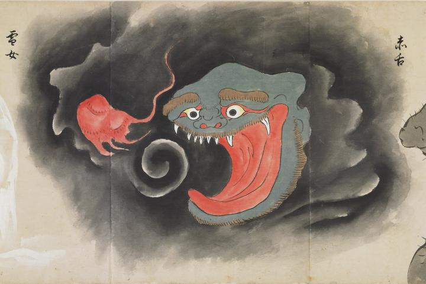

大きく口を開き、赤い舌を見せている化物。黒雲に大きな頭部だけが浮いている。茶色の太い眉で口のまわりには細かいひげが生えている。一緒に火の玉のようなものが浮かんでいる。
著作者：北斎季親／出典：親書誌：U426_nichibunken_0052：化物尽絵巻；バケモノヅクシエマキ／日付：2007／資源識別子：U426_nichibunken_0052_0020_0000
Copyright (c)2010- International Research Center for Japanese Studies, Kyoto, Japan. All rights reserved.